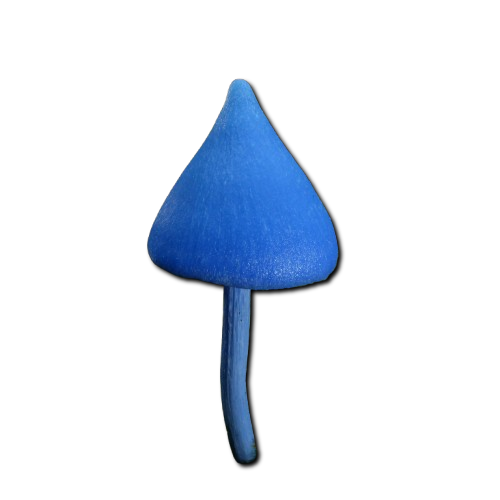
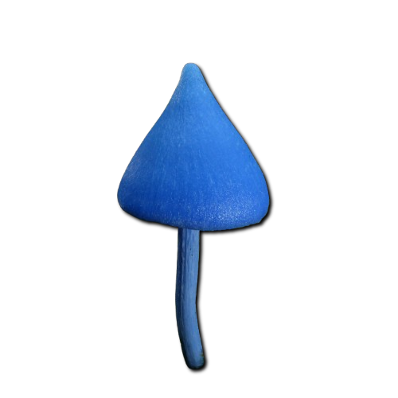

Descripción morfológica
Entoloma nitroproussidum, conocido como "entoloma azul de nitrógeno", es un basidiomiceto de la familia Entolomataceae. Sus cuerpos fructíferos presentan sombreros de 3-8 cm de diámetro, inicialmente cónicos luego convexos, con superficie sedosa y color azul cobalto metálico que vira a gris-azulado con la edad. Las láminas son adnatas, inicialmente azuladas y luego rosadas por la maduración de las esporas. El pie (4-10 cm) es cilíndrico, fibriloso y del mismo color que el sombrero, con base ligeramente bulbosa. La carne es frágil, azul pálida, con olor a pepino fresco y sabor suave.
Características distintivas
- Pigmentación: Azulación intensa por nitroproussina, compuesto nitrogenado único.
- Esporas: Angulosas, rosadas en masa, 8-11 × 7-9 µm con 5-6 ángulos.
- Reacción química: Cutícula vira a verde esmeralda con KOH 10%.
- Confusiones: Similar a Entoloma hochstetteri (endémico de Nueva Zelanda).
Distribución y hábitat
Endémico de bosques nubosos andinos (Colombia, Ecuador, Perú) entre 2,800-3,500 msnm. Crece en suelos ácidos (pH 4.5-5.5) ricos en humus, asociado a raíces de Quercus humboldtii y Weinmannia spp. Fructifica durante las temporadas lluviosas (abril-mayo y octubre-noviembre), formando pequeños grupos en claros boscosos con alta humedad ambiental (>85%). Su presencia indica ecosistemas poco perturbados con alta diversidad de orquídeas epífitas.
Condiciones ecológicas
- Temperatura: Rango óptimo 12-16°C (no fructifica sobre 18°C).
- Luminosidad: Requiere 30-50% de luz filtrada por dosel boscoso.
- Asociaciones: Micorriza obligada con árboles nativos andinos.
Bioquímica y propiedades únicas
Contiene nitroproussina, pigmento azul con grupo nitroso (-NO) que absorbe a 580 nm, único en hongos. Estudios de RMN revelan que este compuesto tiene actividad quelante de metales pesados (especialmente cobre). También produce entolomidinas, alcaloides con leve actividad insecticida (LD50 = 120 mg/kg en Drosophila). La intensidad del color azul correlaciona con la concentración de nitroproussina (2-4 mg/g peso seco), que actúa como protector solar contra UV-B en altitud.
| Compuesto | Concentración | Propiedades |
|---|---|---|
| Nitroproussina | 0.2-0.4% peso seco | Antioxidante (ORAC 15,000 µmol TE/g) |
| Entolomidina B | 0.05-0.1% | Inhibe acetilcolinesterasa (40% a 100 ppm) |
Estado de conservación
Catalogado como En Peligro en la Lista Roja de Hongos de los Andes debido a:
- Distribución restringida (<500 km² área de ocupación).
- Deforestación de robledales andinos (>60% pérdida en último siglo).
- Cambio climático (aumento de temperatura en su rango altitudinal).
Medidas de protección
- Protección de bosques de Quercus humboldtii en reservas naturales.
- Programas de cultivo micorrícico in vitro con plántulas de roble.
- Monitoreo poblacional cada 5 años (último conteo: 1,200 individuos maduros).
Investigación y potencial
- Estudios preliminares con nitroproussina como colorante alimentario natural (CI 75810).
- Posible uso en biorremediación de suelos con exceso de cobre (quelación eficiente a pH 5).
- Secuenciación genómica en curso para identificar genes de síntesis de pigmentos.
Precauciones
- No comestible - contiene alcaloides gastrointestinales en láminas.
- Evitar manipulación prolongada (puede teñir piel de azul).
- Colecta regulada - requiere permiso de autoridades ambientales andinas.